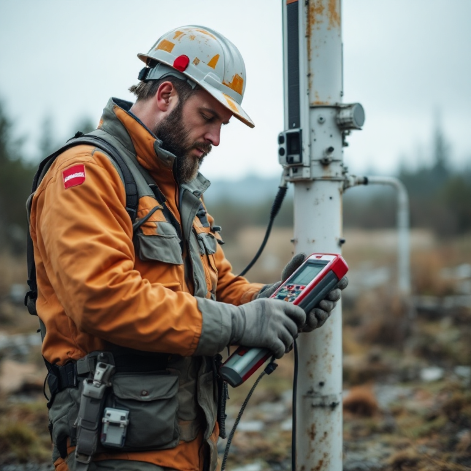
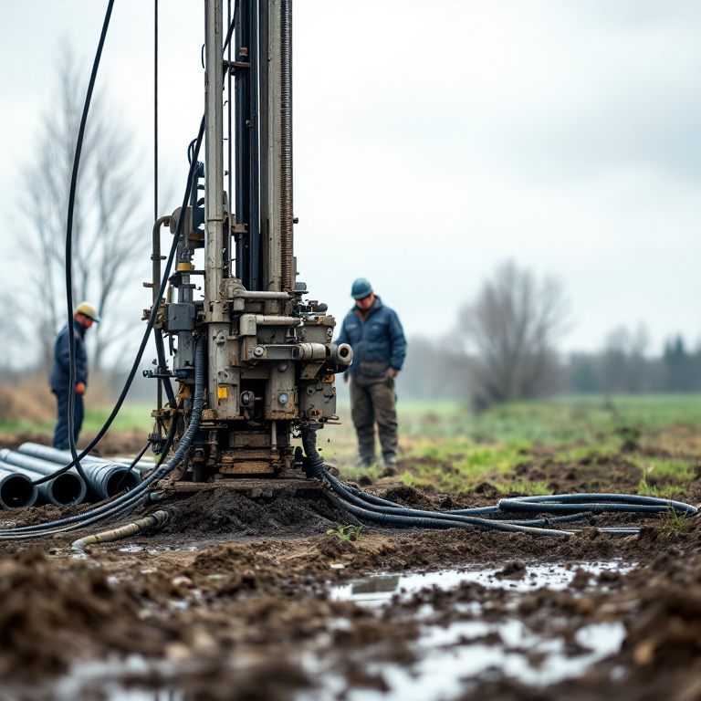

Предоставление права пользования участком недр местного значения для целей добычи подземных вод в соответствии с Законом РФ «О недрах» №2395-1 от 21.02.1992
по-человечески
Лицензия на скважину.
Переведём с бюрократического.
4 шага от «скважина без документов» до «лицензия получена». Покажем маршрут.
Ваш маршрут: 4 шага
Каждый шаг — на двух языках. Что пишут в документах и что мы реально делаем.
Формирование комплекта документов для подачи заявления о предоставлении права пользования участком недр в соответствии с Приказом Минприроды №583 от 29.09.2020 (перечень — 23 позиции)
по-человеческиСобираем 23 бумажки. От вас — только паспорт и подпись.
Проведение гидрогеологического обследования водозаборного сооружения с оценкой эксплуатационных запасов подземных вод (Классификация запасов, Приказ МПР №477)
по-человеческиПриезжаем, замеряем воду, пишем отчёт. Вам ничего делать не надо.
Проектирование зон санитарной охраны (ЗСО) I–III поясов водозаборного сооружения с согласованием в территориальном отделе Роспотребнадзора (СанПиН 2.1.4.1110-02)
по-человеческиЧертим три круга вокруг скважины. Без них Роснедра даже заявку не примут.
Подача полного комплекта документации в Департамент по недропользованию по ЦФО (территориальный орган Роснедр), регистрация заявления, сопровождение рассмотрения, получение бланка лицензии серии ВРН
по-человеческиНесём папку в нужный кабинет. Знаем, к кому и когда. Ждём — и забираем лицензию.

выезд, Рамонский р-нВаш проводник: геолог с 20-летним стажем.
Знает оба языка — и ваш, и Роснедр.
Был в каждом кабинете Роснедр. Лично.
Кто уже прошёл этот маршрут
Выберите свой тип — покажем результат.

бурение, Аннинский р-н, 2023СНТ «Родник», Рамонский р-н
«Полтора месяца, и всё готово. Объяснили каждую бумагу.»— Пётр Н., председатель↻ назад
Промбаза «ВоронежАгро», Аннинский р-н
«Конкретный маршрут, конкретная цена. Не как у других.»— Ирина С., гл. бухгалтер↻ назад
КФХ «Заречное», Хохольский р-н
«Объяснили зачем, сделали быстро. Не верилось, что так просто.»— Виктор И., фермер↻ назад